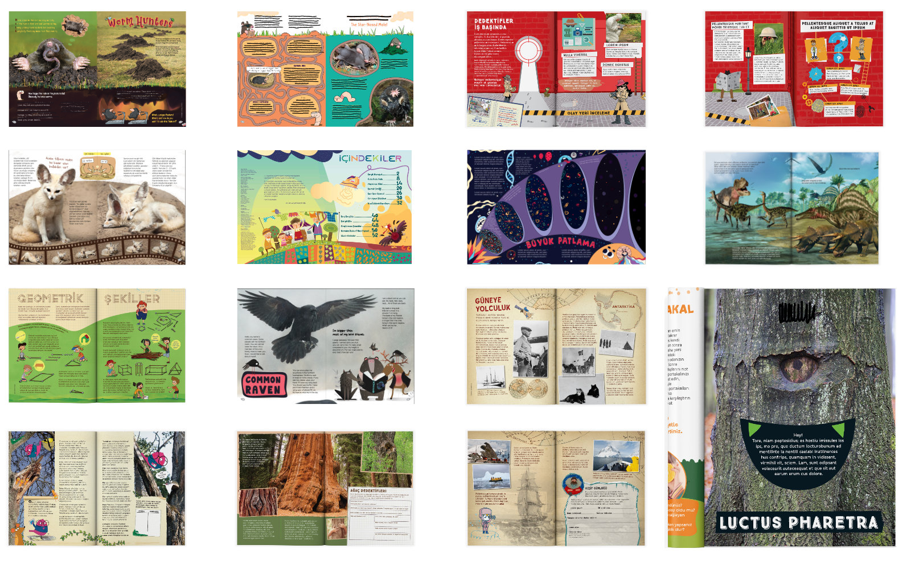

Young Researchers
2015 - 2021Young Researchers is a children's science magazine published by Araştırmacı Çocuk Merkezi (Children's Research Center) in Ankara. Each issue explores a single big question, from black holes to bioluminescence, through STEM articles, hands-on experiments, illustrated infographics, and puzzles designed to build curiosity and analytical thinking in readers aged 8 to 12.
The Design Challenge
Designing for children is anything but simple. Every page has to compete with a world built for instant attention, so layouts needed to feel alive, and visually engaging without being chaotic. The challenge was creating a system rigorous enough to publish consistently across 30+ issues, while keeping each one feeling fresh and specific to its theme.
Visual System & Style Guide
I developed a modular visual system that gave the editorial team a clear framework to work within: a flexible grid, a palette system that shifted per issue theme, typographic hierarchy calibrated for young readers, and a library of reusable infographic and layout components. The style guide established rules for illustration integration, data visualisation, and iconography. It continues to be used by the team today.
Illustration & Infographics
Beyond layout, I produced original illustrations across multiple issues: scientific diagrams, decorative headers, and explanatory visuals that translated complex concepts into images an 8-year-old could both understand and find delightful. Familiar, everyday scenarios made abstract ideas feel approachable.
Co-Designing with Children
One of the most rewarding parts of this project was running participatory design sessions directly with the magazine's readers. Children tested layouts, reacted to illustration styles, and gave feedback on what made a page feel inviting or overwhelming.
Print Production & Delivery
Each issue was produced under tight editorial deadlines and delivered print-ready to the press with zero errors. Preflighting files, managing colour profiles, coordinating with the printer, and signing off on proofs were all part of the workflow. Alongside print, I prepared digital assets for each issue, adapted for different platforms and formats.
Project Overview
- Art direction and layout design across 30+ issues
- Visual system and style guide, still in use
- Original illustrations and infographic design
- Participatory design sessions with child readers
- Print production, preflighting, and press coordination
- Social media banners and promotional assets per issue
- Bilingual editions, Turkish and English
- Published by Araştırmacı Çocuk Merkezi, Ankara